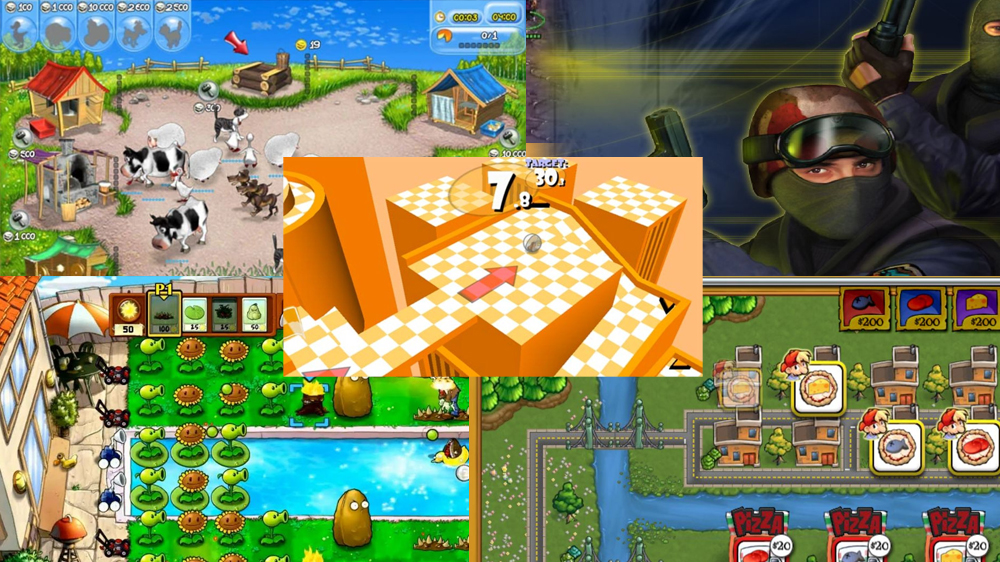

DUNIA GAME 1990-2020
Game mengalami perubahan besar sejak tahun 1990 hingga 2020. Perkembangan teknologi, jenis permainan, dan cara pemain menikmati game menjadi semakin beragam.
1. Perkembangan dari Tahun 1990
Tahun 1990, game masih bergantung pada teknologi kasino, konsol, perkembangan awal, dan komputer pribadi. Musik, grafik, dan alur game sederhana tetapi memiliki daya tarik yang kuat. Game arcade menjadi salah satu jenis permainan yang populer pada periode ini.
Jenis game
Jenis game yang umum digunakan adalah game arcade, game keluarga, game olahraga, dan game petualangan.
Kualitas
Kualitas grafik pada tahun 1990 masih sederhana dan menggunakan warna yang terbatas. Beberapa game memanfaatkan animasi 2D dan sound effects yang cukup menarik.
Gameplay
Gameplay lebih fokus pada masukan sederhana, seperti menekan button, menggerakkan karakter, atau menghindari musuh.
Review
Game tahun 1990 dikenal dengan kemudahan pemain untuk memahami dan menikmati gameplaynya. Walaupun teknologi belum canggih, game tetap memiliki daya tarik karena kemampuannya menjaga pemain tetap aktif.
Rating
Rating: 7/10

2. Perkembangan dari Tahun 2000
Tahun 2000 menandai perubahan lebih besar dalam dunia game. Grafik menjadi lebih realistis, teknologi audio berkembang, dan game mulai tersedia pada berbagai platform.
Jenis game
Game yang populer pada periode ini antara lain game action, adventure, racing, simulation, dan game multiplayer.
Kualitas
Grafik 3D mulai digunakan secara luas. Warna, bayangan, dan animasi mengalami peningkatan dibandingkan tahun 1990.
Gameplay
Gameplay menjadi lebih kompleks dengan penggunaan strategi, cerita, dan karakter yang berbeda. Game mulai menawarkan pengalaman yang lebih mendalam bagi pemain.
Review
Game tahun 2000 memiliki kemajuan dalam hal penyampaian cerita dan interaksi. Meskipun masih menggunakan teknologi lama, game ini memberikan pengalaman yang menarik dan menghibur.
Rating
Rating: 8/10

3. Perkembangan dari Tahun 2020
Tahun 2020 menandai perubahan besar karena teknologi game semakin canggih. Game menjadi lebih realistis, interaktif, dan terhubung dengan dunia digital.
Jenis game
Jenis game pada tahun 2020 meliputi game aksi, petualangan, simulasi, olahraga, game indie, game multiplayer, dan game yang dapat dimainkan melalui cloud gaming.
Kualitas
Grafik menjadi lebih realistis dengan penggunaan teknologi rendering terbaru. Kualitas audio, animasi, dan unsur visual juga mengalami peningkatan.
Gameplay
Gameplay lebih kompleks dan interaktif. Pel pemain dapat menikmati pengalaman cerita, kompetisi, eksplorasi, dan kolaborasi dengan pemain lain.
Review
Tahun 2020 menjadi periode penting dalam perkembangan dunia game. Game menawarkan pengalaman yang lebih unik, teknologi canggih, dan akses yang lebih mudah melalui berbagai platform.
Rating
Rating: 9/10

Kesimpulan
Perkembangan dunia game dari 1990 hingga 2020 menunjukkan bahwa game selalu mengalami kemajuan. Dari game sederhana hingga game realistis dan interaktif, dunia game telah menjadi bagian penting dalam kehidupan masyarakat modern.